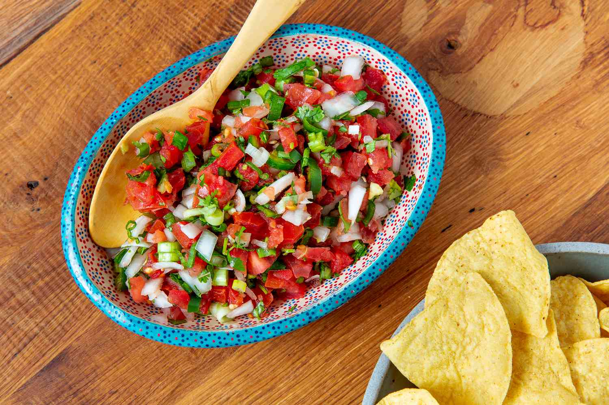

Salad

This is a salad common with hispanic culture.
It's a very refreshing side to go with chips, meat and or even by itself!
Ingredients
- 1 white onion
- 1 cilantro bunch
- 2 tomatoes
- 2 limes
- 2 chile serranos
- salt
- pepper
Steps
- Dice onion.
- Mince cilantro into small pieces.
- Cut tomatoes into halves and clean out the mush.
- Dice what's left of the remaining tomatoes.
- Cut chile serranos top end and clean out the seeds.
- Chop serranos.
- Mix the vegetables.
- Salt and pepper the salad with a pinch of each.
- squeeze limes into the salad then thoroughly mix.